如何配置Policy强制AWS控制台使用MFA，CLI不用MFA？
0x00 前言
众所周知，AWS在账号体系这块支持使用MFA，而我们在使用MFA的时候通常有如下几种场景：
- 用或者不用MFA都行
- 通过Policy强制User使用MFA（console、CLI），不用的话就不让你访问
- 通过Policy强制User在控制台使用MFA，在CLI上不使用MFA（安全向业务需求的妥协）
- MFA相关Policy Key的解读
- Yubikey、硬件MFA设备初体验
所以说嘛，安全这个事是相对的，回到安全哲学上，这件事取决于要保护的业务资产的重要程度和价值。下面就上述几种情况的使用场景及配置方法，做一下逐一说明。（需要留意的是目前在AWS中国区只支持虚拟MFA设备，不支持硬件MFA设备或者Yubikey。）
0x01 配置IAM User支持MFA（用或者不用MFA都不影响User能否使用AWS资源）
我有一个附加了管理员权限的IAM User，但是没有附加任何MFA相关的Policy。这种情况下就属于用不用MFA都行的场景，通常适用于安全意识比较高，可以自觉配置的MFA的同学，比如说企业的安全工程师。或者作为测试账号用用。
下面我们就来看看MFA功能如何配置：
- 搞个虚拟MFA APP（AWS中国区目前只支持虚拟MFA设备，不支持硬件MFA、Yubikey）
- 去IAM控制台配置
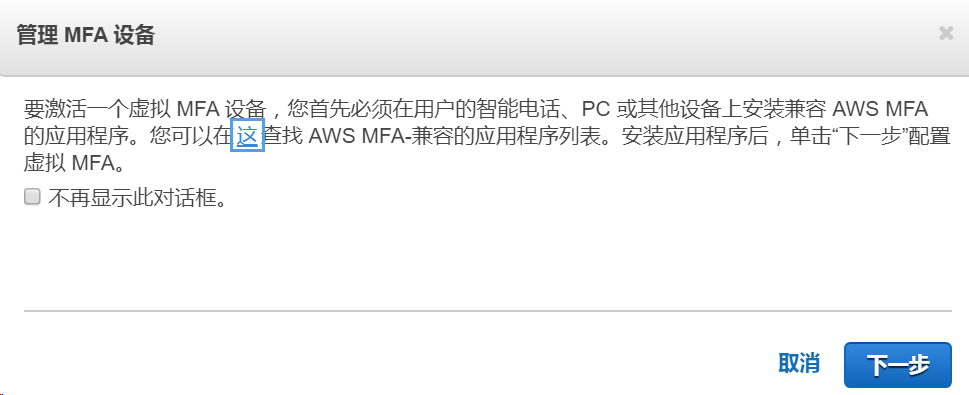
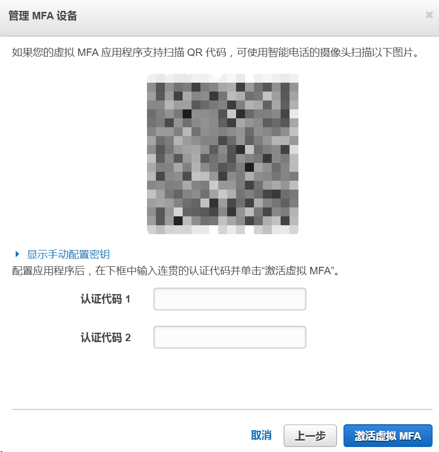
配置完成后，当我们在控制台登录该IAM User时，是需要输入PIN code的（CLI不需要）。
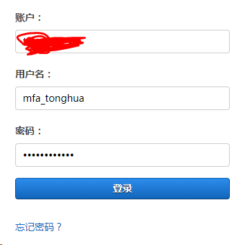
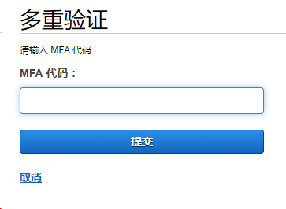
登录之后，就可以访问里头的服务和资源了。CLI可以直接使用，而无需使用MFA：1
aws s3 ls --profile mfa_tonghua --region cn-north-1
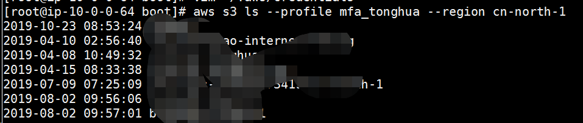
0x02 通过Policy强制User使用MFA（console、CLI），不用的话就不让你访问
可以看到上述配置有一个小问题，就是我没有MFA的Policy，当这个User取消MFA之后仍然可以正常登录AWS控制台。那作为一家安全意识比较高的企业或者团队，要求强制使用MFA，如果不使用的话，就不让你继续访问AWS的服务，这里我就说说这个Policy该怎么实现 [2]。按照文档中的Policy，几乎不用做任何修改，附加至User上看看（arn:aws:iam::需要替换成符合中国区规范的arn地址 arn:aws-cn:iam::）。1
2
3
4
5
6
7
8
9
10
11
12
13
14
15
16
17
18
19
20
21
22
23
24
25
26
27
28
29
30
31
32
33
34
35
36
37
38
39
40
41
42
43
44
45
46
47
48
49{
"Version": "2012-10-17",
"Statement": [
{
"Sid": "AllowViewAccountInfo",
"Effect": "Allow",
"Action": "iam:ListVirtualMFADevices",
"Resource": "*"
},
{
"Sid": "AllowManageOwnVirtualMFADevice",
"Effect": "Allow",
"Action": [
"iam:CreateVirtualMFADevice",
"iam:DeleteVirtualMFADevice"
],
"Resource": "arn:aws-cn:iam::*:mfa/${aws:username}"
},
{
"Sid": "AllowManageOwnUserMFA",
"Effect": "Allow",
"Action": [
"iam:DeactivateMFADevice",
"iam:EnableMFADevice",
"iam:GetUser",
"iam:ListMFADevices",
"iam:ResyncMFADevice"
],
"Resource": "arn:aws-cn:iam::*:user/${aws:username}"
},
{
"Sid": "DenyAllExceptListedIfNoMFA",
"Effect": "Deny",
"NotAction": [
"iam:CreateVirtualMFADevice",
"iam:EnableMFADevice",
"iam:GetUser",
"iam:ListMFADevices",
"iam:ListVirtualMFADevices",
"iam:ResyncMFADevice",
"sts:GetSessionToken"
],
"Resource": "*",
"Condition": {
"BoolIfExists": {"aws:MultiFactorAuthPresent": "false"}
}
}
]
}
策略配置成功之后，当我们在CLI中访问可以看到已经报访问拒绝（Access Denied）的错误了。
然后，当我把MFA设备取消激活之后，发现在控制台登录也会被禁止访问了（准确的说，是可以登录成功，但是无法访问任何资源，只有激活MFA之后才能继续使用）。
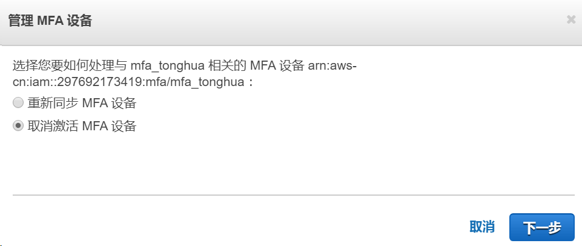
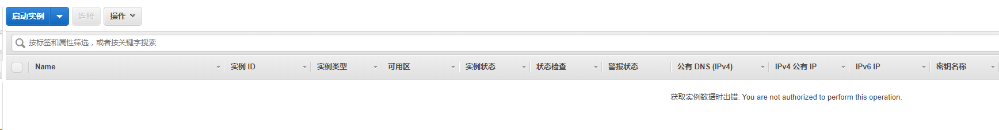
恩，构造好类似这样的URL：https://console.amazonaws.cn/iam/home?region=cn-north-1#/users/mfa_tonghua?section=security_credentials当前用户可以给自己创建虚拟MFA设备啦。
那你可能就要说了，我控制台上能输入PIN Code访问了，那我CLI咋整啊，有啥参数可以指定吗。emm，莫得慌张CLI可以这么玩[3]（思路就是输入PIN Code创建临时访问凭证，然后使用临时的访问凭证去访问AWS资源）：1
aws sts get-session-token --serial-number arn:aws-cn:iam::123456789012:mfa/mfa_tonghua --token-code 631424 --profile mfa_tonghua --region cn-north-1
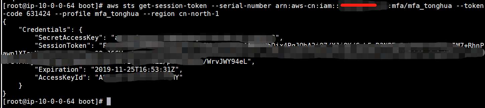
–token-code 参数就是虚拟MFA设备上头的动态PIN Code。
然后配置临时的访问凭证访问即可：1
2
3export AWS_ACCESS_KEY_ID=333
export AWS_SECRET_ACCESS_KEY=222
export AWS_SESSION_TOKEN=111
可以看到已经可以使用临时访问凭证，访问AWS的资源了：
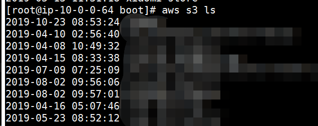
如果您通过–debug查看的话可以看到，使用的凭证就是在环境变量env中加载出来的：1
22019-11-25 06:10:51,777 - MainThread - botocore.credentials - DEBUG - Looking for credentials via: env
2019-11-25 06:10:51,778 - MainThread - botocore.credentials - INFO - Found credentials in environment variables.
如果您不想使用环境变量中的临时凭证了，使用unset命令，删掉指定的环境变量即可。
0x03 通过Policy强制User在控制台使用MFA，在CLI上不使用MFA（安全向业务需求的妥协）
上面那种CLI/Console中都强制使用MFA是最稳的一种方式。有的时候，业务部门的同事jio着CLI上还要输入MFA的PIN Code然后拿临时访问凭证好麻烦啊，能不能CLI上不走MFA额，这件事情是可以做到的，但是在做之前要明确几件事情：
- 现有的CLI通过输入PIN Code生成临时访问凭证的方式为什么不能满足需求？
- 有没有尝试使用EC2 Role的方式？能不能满足需求？
- 不走MFA，CLI凭证泄露的风险由业务部门自行承担
几个问题都问完之后，就可以接着往下操作了，其实很简单，只要修改Policy中的如下部分即可：1
2"Effect" : "Deny",
"Condition" : { "Bool" : { "aws:MultiFactorAuthPresent" : false } }
唯一的区别就是将BoolIfExists修改为Bool，先测试一下看看效果，稍后会对这些Key做详细的解读。
可以看到CLI上已经无需使用MFA了，而控制台仍然需要：
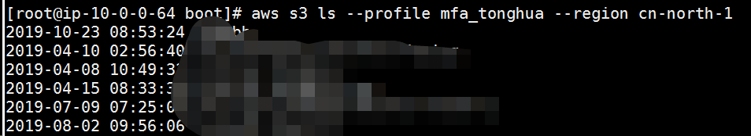
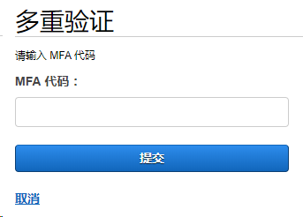
搞定！
0x04 MFA相关Policy Key的解读
在这一小节，我就着重说一说Policy中跟MFA息息相关的Policy Key，一共如下几个：
- aws:MultiFactorAuthPresent
- BoolIfExists
- Bool
aws:MultiFactorAuthPresent是Policy中的全局Condition Key[4]，当用户使用临时访问凭证发起请求时，在其请求的上下文中会包含该Key，使用持久化的访问凭证发起请求时，在其请求上下文中是不包含该Key的。
那什么是临时访问凭证发起的请求呢？典型有控制台、Role、或者get-session-token生成的凭证都是临时访问凭证。
那CLI/控制台都是用MFA的Policy怎么解读呢：1
2"Effect" : "Deny",
"Condition" : { "BoolIfExists" : { "aws:MultiFactorAuthPresent" : false } }
临时访问凭证中包含aws:MultiFactorAuthPresent这个Key，
在请求上下文中，如果包含aws:MultiFactorAuthPresent这个Key，并且这个Key等于true代表用了MFA，等于false代表没走MFA。
那回到这个Policy，当我使用了MFA时，aws:MultiFactorAuthPresent==true，然后这个Condition不成立，就不会执行该Policy，然后就会allow继续操作，如果我没使用MFA，aws:MultiFactorAuthPresent==false，条件成立，Policy生效，会Deny掉相关的API call。当我使用持久凭证时，没有aws:MultiFactorAuthPresent这个Key，所以默认Condition成立，进而Policy成立，会Deny掉相关API call。
在控制台中使用MFA，CLI中不使用MFA的Policy解读：1
2"Effect" : "Deny",
"Condition" : { "Bool" : { "aws:MultiFactorAuthPresent" : false } }
在请求上下文中，aws:MultiFactorAuthPresent == true（使用MFA）时，Condition不成立，Policy不生效，可以执行相关API call，等于false时，Condition成立，Policy生效，会被Deny掉相关API call。
0x05 Yubikey、硬件MFA设备初体验
注意了，以下的配置目前并不适用于AWS中国区，但是为了保证文章的完整性，我在AWS Global区域做了测试。
先来看看YubiKey：
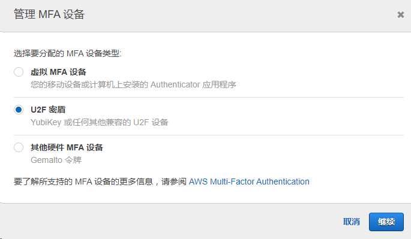
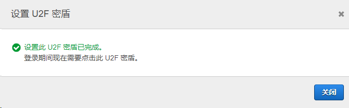
再登录的时候就变成这样了：
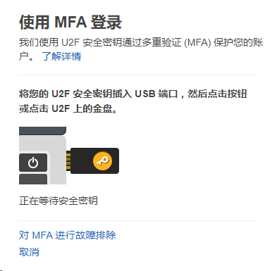
当然，遇到问题了也别慌，参考下这个[5]，看能不能解决您的问题。
硬件MFA设备先不看了，我的设备是8位的，它的好像只能6位？
0x06 总结
记录一下AWS使用MFA的常见场景，备忘。
0x07 参考链接
[1] Multi-factor Authentication, https://aws.amazon.com/cn/iam/features/mfa/
[2] AWS: Allows MFA-Authenticated IAM Users to Manage Their Own MFA Device on the My Security Credentials Page, https://docs.aws.amazon.com/IAM/latest/UserGuide/reference_policies_examples_aws_my-sec-creds-self-manage-mfa-only.html
[3] How do I use an MFA token to authenticate access to my AWS resources through the AWS CLI?, https://aws.amazon.com/premiumsupport/knowledge-center/authenticate-mfa-cli/?nc1=h_ls
[4] AWS Global Condition Context Keys, https://docs.aws.amazon.com/IAM/latest/UserGuide/reference_policies_condition-keys.html
[5] Troubleshooting U2F Security Keys, https://docs.aws.amazon.com/IAM/latest/UserGuide/troubleshoot_mfa-u2f.html